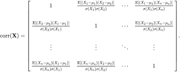
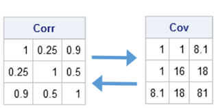

`modelsummary` 2.0.0 now uses `tinytable` as its default table-drawing
backend. Learn more at: https://vincentarelbundock.github.io/tinytable/
Revert to `kableExtra` for one session:
options(modelsummary_factory_default = 'kableExtra')
Change the default backend persistently:
config_modelsummary(factory_default = 'gt')
Silence this message forever:
config_modelsummary(startup_message = FALSE)
The following objects are masked from 'package:base':
as.Date, as.Date.numeric
######################### Warning from 'xts' package ##########################
# #
# The dplyr lag() function breaks how base R's lag() function is supposed to #
# work, which breaks lag(my_xts). Calls to lag(my_xts) that you type or #
# source() into this session won't work correctly. #
# #
# Use stats::lag() to make sure you're not using dplyr::lag(), or you can add #
# conflictRules('dplyr', exclude = 'lag') to your .Rprofile to stop #
# dplyr from breaking base R's lag() function. #
# #
# Code in packages is not affected. It's protected by R's namespace mechanism #
# Set `options(xts.warn_dplyr_breaks_lag = FALSE)` to suppress this warning. #
# #
###############################################################################
Attaching package: 'xts'
The following objects are masked from 'package:dplyr':
first, last
One of the general goals of statistics is to understand if there is a relationship between two variables.
Covariance measures the degree to which the deviation of one variable (X) from its mean is related to the deviation of another variable (Y) from its mean. In other words, covariance measures the joint variability of two random variables or how these increase or decrease in relation with each other.
For instance, if greater values of one variable tend to correspond with greater values of another variable, this suggests positive covariance.
Covariance can have both positive and negative values.
A Covariance Matrix shows the covariance between different variables of a data set.
Correlation tells us both the strength and the direction of this relationship by listing the Correlation Coefficient (“Pearson”, “Spearman”, or “Kendall”) for the pair as measure of association.
Correlation matrix allows for the exploration of the correlation among the multiple variables in a data set. It proves this information through a table listing the correlation coefficients (r) for each relationship between pair of variables in the data set.
Correlation is best used for multiple variables that express a linear relationship with one another.
Correlation between two variables highlight how a change in one variable impacts a change in another variable.
In sum, a covariance and a correlation matrix sound similar because covariance is a measure of correlation, while correlation is a scaled version of covariance. This means correlation is a special case of covariance which can be achieved when the data is in standardized form.
16.2 About Covariance and Correlation
16.2.1 Equations, properties, and uses
Mathematical equations, properties, and uses
Remember the equation for the variance for one variable
Covariance: Relation between two variables where, (x_i are the values of the X-variable), (y_i* are the values of the Y-variable), (x_bar is the mean of the X-variable), (y_bar* is the mean of the Y-variable), and (n are the number of data points)
This is of importance and allows us to see the relationship between covariance and correlation in this simplified equation for the Pearson Correlation Coefficient, r. [video explaining standarization and mathematical properties of r]:
\[
r = \frac {Cov(x,y)}{(\sqrt{var(x)})(\sqrt{var(y)})}
\]
16.2.1.2 Correlation Matrix

Sample correlation matrix
Correlation Properties: direction
r = 1: A perfect positive correlation.
r = 0: Zero or no correlation.
r = -1: A perfect negative relationship. where,
The sign of the correlation coefficient indicates the direction of the association.
Correlation Properties: strength
.1 < | r | < .3 (small / weak correlation).
.3 < | r | < .5 (medium / moderate correlation).
.5 < | r | (large / strong correlation).
The magnitude of the correlation coefficient indicates the strength of the association.
Correlation uses
To summarize the correlation among various variables of a data set.
To perform regression testing (like multicollinarity)
Basis of other analyses (like regression models)
Correlation, r and Covariance

Visual contrast
We will concentrate on the Correlation Matrix which provides the Pearson Correlation Coefficient or (its variations for non-parametric data such as, spearman and kendall).
16.3 Data set used
We will use the R data set “mtcars” to provide examples on developing a Covariance Matrix and on checking the assumptions for and development of a Correlation Matrix using the pearson correlation coefficient.
# Load datadata("mtcars")# Print samplehead(mtcars)%>%kable( format ="markdown", digits =2, caption ="The mtcars data set")
The mtcars data set
mpg
cyl
disp
hp
drat
wt
qsec
vs
am
gear
carb
Mazda RX4
21.0
6
160
110
3.90
2.62
16.46
0
1
4
4
Mazda RX4 Wag
21.0
6
160
110
3.90
2.88
17.02
0
1
4
4
Datsun 710
22.8
4
108
93
3.85
2.32
18.61
1
1
4
1
Hornet 4 Drive
21.4
6
258
110
3.08
3.21
19.44
1
0
3
1
Hornet Sportabout
18.7
8
360
175
3.15
3.44
17.02
0
0
3
2
Valiant
18.1
6
225
105
2.76
3.46
20.22
1
0
3
1
16.4 Covariance Matrix Procedure
The procedure to develop a covariance matrix uses the cov() function. It takes the data frame as an argument and returns the covariance matrix as result. It is as follows:
[conflicted] Will prefer rstatix::select over any other package.
mtcars2<-mtcars%>%select(1, 3, 4, 5, 6, 7)mtcars2_cov<-cov(mtcars2)kable(mtcars2_cov, caption ="Covariance of mtcars using the Pearson type")
Covariance of mtcars using the Pearson type
mpg
disp
hp
drat
wt
qsec
mpg
36.324103
-633.09721
-320.73206
2.1950635
-5.1166847
4.5091492
disp
-633.097208
15360.79983
6721.15867
-47.0640192
107.6842040
-96.0516815
hp
-320.732056
6721.15867
4700.86694
-16.4511089
44.1926613
-86.7700806
drat
2.195063
-47.06402
-16.45111
0.2858814
-0.3727207
0.0871407
wt
-5.116685
107.68420
44.19266
-0.3727207
0.9573790
-0.3054816
qsec
4.509149
-96.05168
-86.77008
0.0871407
-0.3054816
3.1931661
Only the “continuous” variables of mtcars were included in this covariance matrix because the default type of procedure is “Pearson”.
The printout of the covariance matrix is not easy to read or as useful as the correlation matrix which has several functions that allow for visual and organizational displays of information.
Some of the results are the following:
The values along the diagonals of the matrix are simply the variances of each product.
The variance of mpg is 36.32
The variance of disp is 15360.8
The other values in the matrix represent the covariances between the various products, for example:
The covariance between mpg and disp is -633.10, this is a negative covariance indicating that vehicles that are fuel efficient or have high miles per galon have lower levels of displacement (smaller engines, less powerful).
The covariance between hp and wt is 44.19, this is a positive covariance indicating that as horse power increases, so does the weight of a vehicle.
16.5 The Correlation Matrix Procedure
The Correlation Matrix procedure is of emphasis because it provides information on the linear relationship among variables (strength and direction). This analysis is of importance to build Regression and multivariate models, as it assists in:
1. The observation of patterns and associations in the data.
2. To conduct or as the basis of other analyses (linear regression models)
3. To conduct diagnostic checks (multicollinearity)
16.5.1 Hypothesis testing in correlations
The bivariate Pearson Correlation produces a sample correlation coefficient, r, which measures the strength and direction of linear relationships between pairs of continuous variables in a sample. By extension, the Pearson Correlation evaluates whether there is statistical evidence for a linear relationship among the same pairs of variables in the population, represented by a population correlation coefficient, ρ (“rho”), which is unknown. The sample pearson correlation coefficient, r, is the estimate of the unknown population coefficient (ρ). Therefore,
The hypothesis test lets us decide whether the value of the population correlation coefficient ρ is “close to zero” or “significantly different from zero”. We decide this based on the sample correlation coefficient r and the sample size n .
Two-tailed significance test:
The null hypothesis for a two-tailed significance test of a correlation is: \[
H_0: ρ = 0
\] rho is zero or approximately zero. This means that the relationship in the population is equal to 0; (“there is no association”)
The alternative hypothesis for a two-tailed significance test of a correlation is: \[
H_1: ρ ≠ 0
\] rho is not zero, which means that the relationship in the population is not equal to 0; (“there is an association in the population”)
One-tailed significance test:
The null hypothesis for a one-tailed significance test of a correlation is: \[
H_0: ρ = 0
\] which means that the relationship in the population is equal to 0; (“there is no association”)
The alternative hypothesis for a one-tailed significance test of a correlation where ρ > 0 is: \[
H_1: ρ > 0
\] which means that there is a positive relationship in the population.
OR
The alternative hypothesis for a one-tailed significance test of a correlation where ρ < 0 is: \[
H_1: ρ < 0
\] which means that there is a negative relationship in the population.
These hypotheses are in terms of ρ.
16.5.2 Assumptions of a Correlation Matrix:
1. The two variables should be measured at the interval or ratio level (e.i., continuous).
a. If interested in the relationship between two categorical variables or ranks (categorical is misleading) you can use "Spearman" as the type of correlation. But if you have two binary variables (i.e. living/dead, black/white, success/failure), then use a Phi Correlation coefficient.
b. If interested in a mix, one can use various functions like "mixedCor" in the `psych` package.
c. If interested in how the levels of a variable like male or female affect the correlation of two variables, we conduct a partial correlation which allow us to control for a third or more other variables using the function "pcor.test" in the `ppcor` package.
2. There should exist a linear relationship between the two variables.
3. Variables should be roughly normally distributed.
4. Each observation in the dataset should have a pair of values.
5. There should be no extreme outliers in the dataset.
16.5.3 Checking Assumptions
16.5.3.0.1 Level of Measurement
Using the skimr package, we will get data set information such as the distribution (histogram) of, and the type/level of measurement for the variables in the “mtcars” data set.
The skimr function nicely displays the data. It indicates that all the variables are currently in numeric format but based on the descriptive information and on the information provided by ?mtcars, only 6 variables meet the level of measurement assumption (interval, ratio), we will then create a data frame from mtcars named cars_df where we leave these 6 variables as continuous double/numeric and categorize the other 5 variables. We present the summary using the gtsummary package.
Now we will examine only the 6 variables meeting the measurement assumption.
16.5.3.1 Linear Relationship
pairs(~mpg+disp+hp+drat+wt+qsec, data =cars_df, main="Simple Scatterplot Matrix")
Based on this simple scatterplot matrix, all variables seem to follow a linear relationship, therefore, we will examine the normality and outliers assumption of these variables.
16.5.3.2 Normality distribution and extreme outliers
par(mfrow =c(2, 3))qqnorm(cars_df$mpg, main ="MPG Q-Q plot", ylab ="Miles per Gallon")qqline(cars_df$mpg)qqnorm(cars_df$disp, main ="Disp Q-Q plot", ylab ="Displacement")qqline(cars_df$disp)qqnorm(cars_df$hp, main ="hp Q-Q plot", ylab ="Gross horsepower")qqline(cars_df$hp)qqnorm(cars_df$drat, main ="drat Q-Q plot", ylab ="Rear axle ratio")qqline(cars_df$drat)qqnorm(cars_df$wt, main ="wt Q-Q plot", ylab ="Weight")qqline(cars_df$wt)qqnorm(cars_df$qsec, main ="qsec Q-Q plot", ylab ="1/4 Mile Time")qqline(cars_df$qsec)
# A combination of ggqqplot and plot_annotation can also be used for the qq plot chart creation
par(mfrow =c(2, 3))MPG_b<-boxplot(cars_df$mpg, main ="MPG boxplot", ylab ="Miles per Gallon")DISP_b<-boxplot(cars_df$disp, main ="Disp boxplot", ylab ="Displacement")HP_b<-boxplot(cars_df$hp, main ="hp boxplot", ylab ="Gross HP")DRAT_b<-boxplot(cars_df$drat, main ="drat boxplot", ylab ="drat")WT_b<-boxplot(cars_df$wt, main ="wt boxplot", ylab ="Weight")qsec_b<-boxplot(cars_df$qsec, main ="qsec boxplot", ylab ="1/4 Mile Time")
par(mfrow =c(2, 3))MPG_h<-hist(cars_df$mpg, main ="MPG Histogram", xlab ="Miles per Gallon")DISP_h<-hist(cars_df$disp, main ="disp Histogram", xlab ="Displacement")HP_h<-hist(cars_df$hp, main ="hp Histogram", xlab ="Gross HP")DRAT_h<-hist(cars_df$drat, main ="drat Histogram", xlab ="drat")WT_h<-hist(cars_df$wt, main ="wt Histogram", xlab ="Weight")QSEC_h<-hist(cars_df$qsec, main ="qsec Histogram", ylab ="1/4 Mile Time")
Important procedures
We will run the correlation matrix using a “Pearson Correlation” for these data without resolving or reviewing some of the issues found with non-normality and extreme outliers for procedural and visual methods used to develop correlation matrices. However,
Normality of variables: The qqplots, boxplots, and histograms visually hightlight that most of the variables have non-normality issues, for some of the variables, the issues with non-normality might not be too extreme for use in a pearson correlation. However, for three of the variables (displacement (disp), horse power (hp), and weight (wt)), the violation of non-normality might require one of the following strategies because non normally distributed data inflate the significance of “r” and outliers can have great influence on Pearson’ corrrelations as it might result in misleading results (like no association or very low association):
Strategies to assist non normal distributions: Data transformations (such as log), Spearman rho correlation, Kendall tau’s correlation.
Presence of outliers The qqplots, and boxplots visually hightlight that most of the outliers present should be further analyzed as these can have great influence on Pearson’ corrrelations because they might provide misleading results/associations (like no association or very low association):
Strategies for outliers: Removal (if it is a confirmed measurement failure or a collection error), The use of Spearman correlation, adjustment/revisions.
16.5.4 Computation of a Correlation Matrix
The function in R to create a basic correlation matrix is cor(). This function uses “pearson” as the default coefficient/method. The other two methods (for ranked correlation matrices) are “kendall” or “spearman”.
If the data set has missing values, one can ask (use =) for “everything”, “all.obs”, “complete.obs”, “na.or.complete”, or “pairwise.complete.obs”. The easiest and most commonly used approach is “use = complete.obs” in which missing values are handled by case wise deletion (and if there are no complete cases, that gives an error).
Our data set (mtcars2) is composed of only the 6 “continuous” variables of the data set ’mtcars”, and does not have missing values, therefore we can use the default method of “pearson” and do not need to specify a use for missing values.
We can also display the lower triangle of the pearson coefficient matrix by using the upper.tri() function.
upper<-cars_corupper[upper.tri(cars_cor)]<-""upper<-as.data.frame(upper)kable(upper, caption ="Lower triangle of matrix correlation")
Lower triangle of matrix correlation
mpg
disp
hp
drat
wt
qsec
mpg
1
disp
-0.85
1
hp
-0.78
0.79
1
drat
0.68
-0.71
-0.45
1
wt
-0.87
0.89
0.66
-0.71
1
qsec
0.42
-0.43
-0.71
0.09
-0.17
1
Another way (easier) to compute and visualize the lower triangle of a correlation matrix could be accomplished by using the function datasummary_correlation() in the modelsummary package.
However, this table is difficult to interpret as p-values for the pearson correlation coefficients are not included. The package Hmisc has functions available to provide p-values and to format the results of a correlation matrix. The function rcorr() provides the p-values of a correlation matrix. It is necessary to convert the data frame to a matrix to run this procedure:
Another way in which a correlation matrix could be constructed displaying p-values is with the function corr.test in the psych package. The default alpha = 0.05 and the default method is “pearson”. Both could be changed to for instance, alpha = 0.01 and method = “spearman”. However, the R documentation for this function indicates that non parametric method calculation is slow.
We can use the package `rstatix to: 1. Create a pearson coefficient correlation matrix with the function cor_mat() 2. Create a matrix of p-values (95% significance is default) with the function cor_pmat(), but p-values are not adjusted or rounded so it is not the best display 3. Create a visual representation of the matrix
# Correlation matrix between all variablesmtcars2_corr<-mtcars2%>%cor_mat()mtcars2_corr
The rquery.cormat in the corrplot package also provides the results of a correlation matrix showing r, p-values, and a visual representation. It can also provide formated results.
The package corrplot allows us to visually format the correlation matrix so that it can be a full matrix or the bottom or top triangle. Additionally, it can display the correlation coefficients, or another with p-values, or a visual representation of significant values.
testmtcars2=cor.mtest(mtcars2, conf.level =0.95)corrplot(cars_cor, type ='full', method ='circle', addCoef.col ='black',)
Using the add = TRUE call inside the upper triangle corrplot function, one could stack matrices, but this method is complicated and requires adjusting sizes and labeling. To create stack full matrices it is best to use the function corrplot.mixed also in the corrplot package. Sadly, some of the features of corrplot are not available, but you can still have very informative visual outputs.
The following matrix visualization using the function chart.Correlation in the package PerformanceAnalytics provides many of the assumption tests for a correlation. The top triangle is the (absolute) value of the correlation coefficient (the default method is “pearson” but it could be changed to “kendall” or “spearman”) plus the result of the cor.test as stars (this can be changed to other symbols). In the bottom triangle of the matrix are the bivariate scatterplots, with a fitted line. This is a quick way to visualize a correlation matrix coefficient and significant relationships while examining assumptions. A must to run this function is to use the data set developed with the six continuous variables of interest (mtcars2).
Warning in par(usr): argument 1 does not name a graphical parameter
Warning in par(usr): argument 1 does not name a graphical parameter
Warning in par(usr): argument 1 does not name a graphical parameter
Warning in par(usr): argument 1 does not name a graphical parameter
Warning in par(usr): argument 1 does not name a graphical parameter
Warning in par(usr): argument 1 does not name a graphical parameter
Warning in par(usr): argument 1 does not name a graphical parameter
Warning in par(usr): argument 1 does not name a graphical parameter
Warning in par(usr): argument 1 does not name a graphical parameter
Warning in par(usr): argument 1 does not name a graphical parameter
Warning in par(usr): argument 1 does not name a graphical parameter
Warning in par(usr): argument 1 does not name a graphical parameter
Warning in par(usr): argument 1 does not name a graphical parameter
Warning in par(usr): argument 1 does not name a graphical parameter
Warning in par(usr): argument 1 does not name a graphical parameter
* The same visualization could be built using the **pairs()** function in base R, but **pairs()** is not very user friendly to construct a correlation matrix.
* In addition, the function **pair.panel** in the `psych` package returns something similar.
* Of interest about this function is that it also allows for regression visualization as regression lines and coinfidence intervals could be part of the output.
A simple correlation matrix could be ran using the full data set and then select the variables significantly correlated and then see if any of them meet the assumptions.
The cpairs() in the gclus package allows for a plot matrix while ordering and coloring the subplots by correlation.
16.6 Other Correlation Types (Spearman and Partial)
16.6.1 Spearman (ranking of variables, non-parametric)
Warning in cor.test.default(mtcars$cyl, mtcars$carb, method = "spearman"):
Cannot compute exact p-value with ties
# This is simply an example of how a spearman procedure is done. Although we can # use continuous variables, the exact p-value cannot be computed with ties. # Therefore, it is better to use ranked data in order to compute the exact p-value.
16.6.2 Partial Correlation
The Partial correlation is the correlation of two variables while controlling for a third or more other variables. The partial correlation coefficient is a measure of the strength of the linear relationship between two variables after entirely controlling for the effects of other variables.
To conduct the partial correlation test
# partial correlation between "mpg" and "wt" given "am"pcor.test(cars_partial$mpg,cars_partial$wt,cars_partial$am)
estimate p.value statistic n gp Method
1 -0.7835341 1.867415e-07 -6.790807 32 1 pearson
This is the calculation of the correlation between miles per gallon and weight while controlling the variable “am” = Transmission (0 = automatic, 1 = manual).
16.7 Example of r in examining the relationship in a pair of variables using the Pearson Correlation Coefficient type of correlation
Using the ggscatter function in the ggpubr package, we could examine the Pearson coefficient and the related p-value for a pair of variables we found of interest in the scatterplot matrix above. We will explore the relationship between the the number of miles per gallon and the weight of a vehicle.
16.7.1 Hypothesis test between mpg and wt
We will test if a vehicle’s weight is related to its fuel efficiency.
\[
H_0: ρ = 0,
\]\[
H_1: ρ ≠ 0
\]
ggscatter(cars_df, x ="mpg", y ="wt", add ="reg.line", conf.int =TRUE, cor.coef =TRUE, cor.method ="pearson", xlab ="Miles/(US) gallon", ylab ="Weight (1000 lbs)")
We can then conduct a Pearson correlation test using the cor.test function.
Pearson's product-moment correlation
data: cars_df$wt and cars_df$mpg
t = -9.559, df = 30, p-value = 1.294e-10
alternative hypothesis: true correlation is not equal to 0
95 percent confidence interval:
-0.9338264 -0.7440872
sample estimates:
cor
-0.8676594
To test the Hypothesis:
The test statistic t is rounded to -10 and the corresponding p-value is 1e-10.
Since the p-value is less than .05, we have sufficient evidence to say that the correlation between a vehicle’s weight and miles per gallon is statistically significant.
\[
t = \frac {-0.868}{\sqrt{\frac {0.2466}{30}}} = -9.574
\]
The critical values \(-t_O = - 2.0423\) and \(t_o = 2.0423\) form the rejection regions for the standardized test statistic. Since t = -9.574 and it is less than \(-t_O = - 2.0423\), we reject the null hypothesis and we can conclude that there is enough evidence at the 95% level of significance that there is a significant linear correlation between fuel efficiency and a vehicle’s weight.
Alternatively, we can use a table of critical values for pearson’s r. In this two-tailed example, with df = 30 and alpha = .05 the critical value is .349, then we can make a decision, |r| = 0.868 is greater than 0.349, which means that we reject the null hypothesis and conclude that there is a relationship between vehicle weight and miles per gallon, r(30) = -0.868, p<0.05
Furthermore,
The direction of the relationship is negative (i.e., heavier vehicles have lower numbers of miles per gallon or are less fuel efficient), meaning that when one variable increases the other variable decreases.
The magnitude, or strength, of the association is approximately strong (5 < | r |).